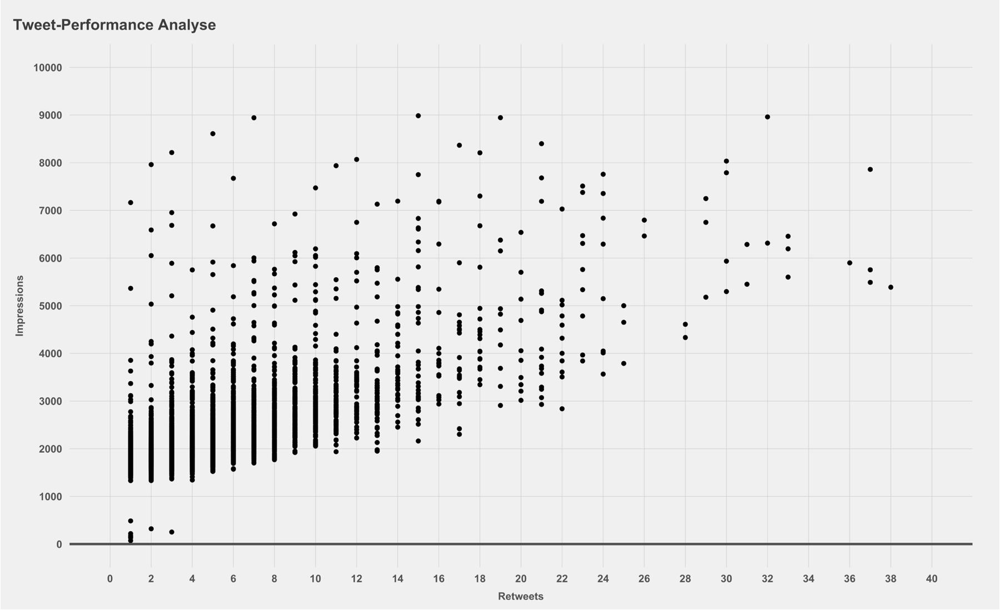
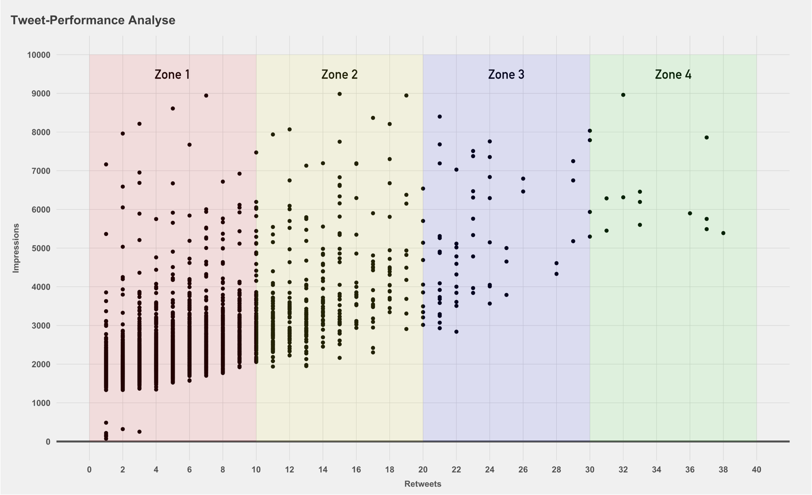
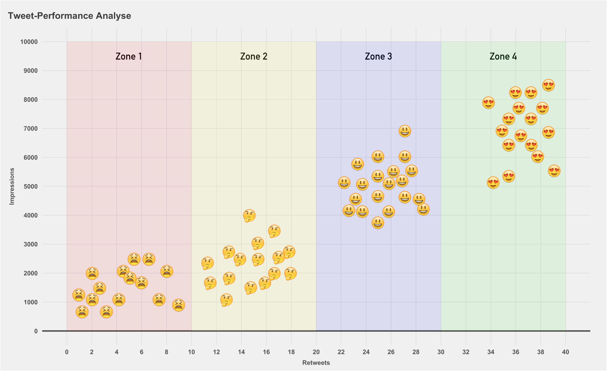
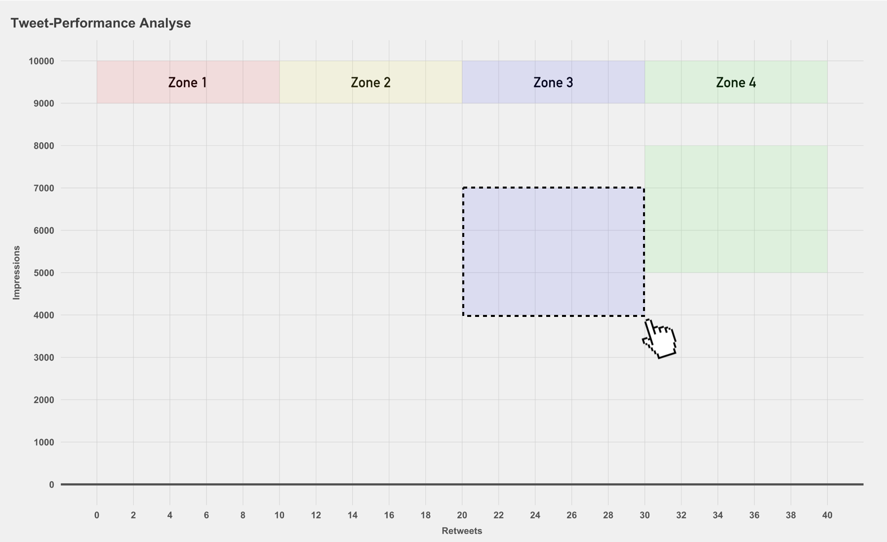
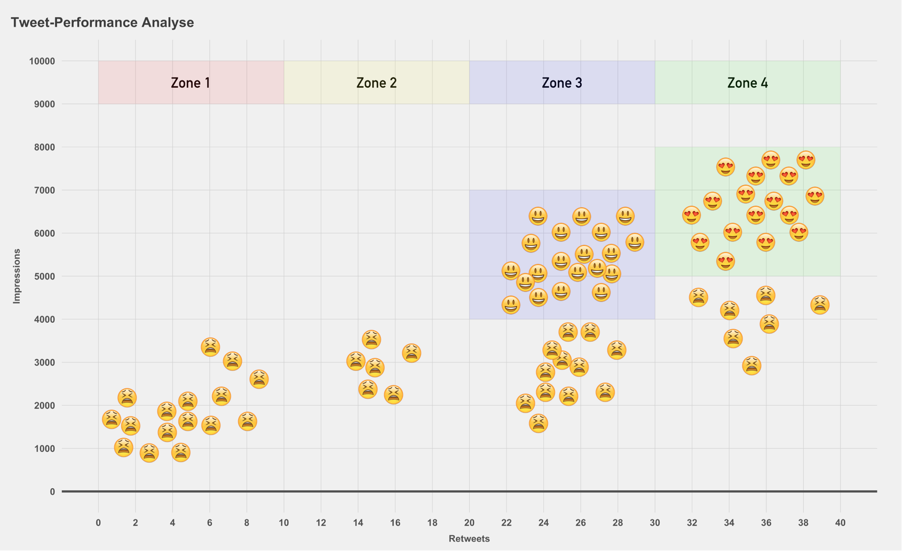
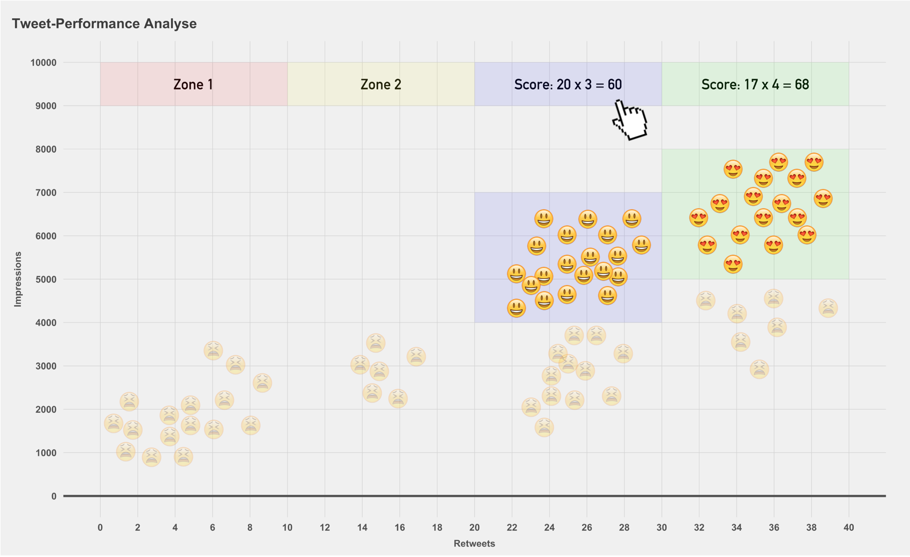

Die nachfolgenden Gedanken sind eine lose Sammlung von Ideen zum Themenfeld NewsMetrics Engagement. Die Gründe für die Auseinandersetzung mit dem Thema resultieren u.a. aus dieser Fragensammlung:
Für das magelnde Engagement mit NewsMetrics mag es viele Gründe geben. Ein Grund ist die dröge und ideenlose Aufbereitung der Daten. Die meisten Analytics-Dashboards sind überladen und nicht besonders benutzerfreundlich. Dementsprechend ist die Motivation für die Nutzung nicht besonders hoch.
Anhand der einzelnen Scatterplot Charts will ich die Evolutionsschritte meiner Idee skizzieren.
Hier kommt hoffentlich noch viel Text rein
Hier kommt hoffentlich noch viel Text rein
   